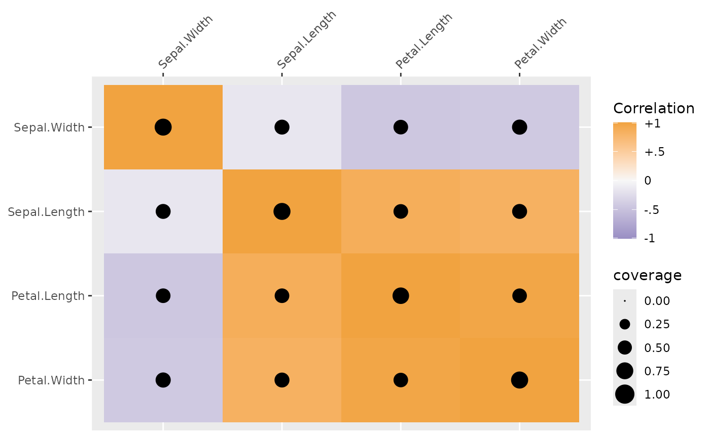
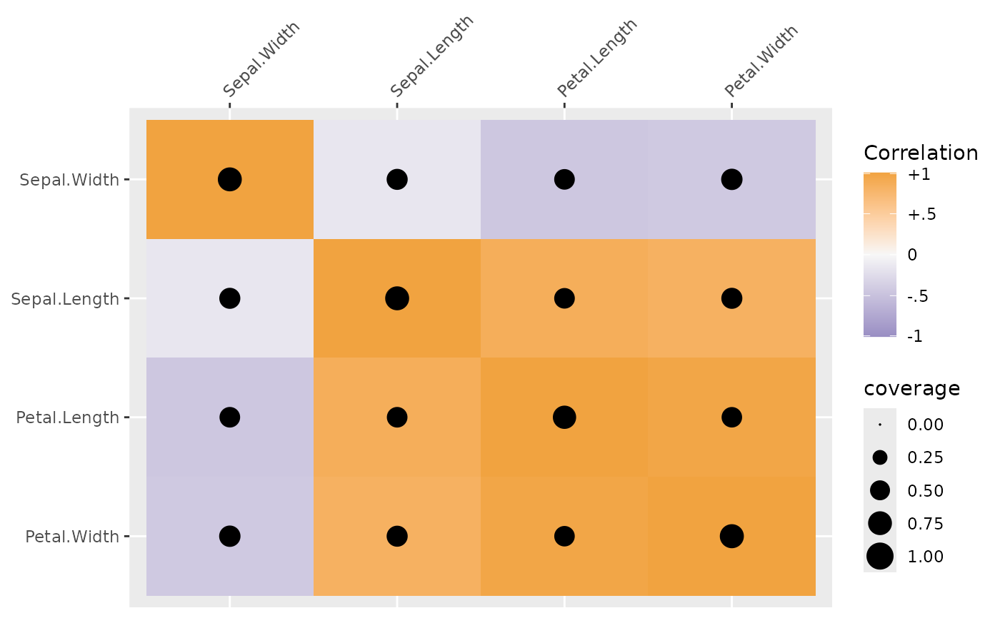

This function creates a heatmap of a correlation matrix using ggplot2.
Arguments
- x
A correlation matrix or some other square symmetric matrix.
- coverage
An (optional) matrix with the same dimensions as
xgiving the proportion of data present. Particularly useful when the correlation matrix is a pairwise present.- pvalues
An (optional) matrix with the same dimensions as
xgiving the p values for each correlation. To show, useplot = "p".- type
A character string indicating what to show on top of the heatmap. Can be ‘coverage’, in which case bubble points show coverage; ‘p’, in which case p values are shown; ‘cor’, in which case correlations are shown; or ‘both’, in which case both correlations and p-values are shown. Only has an effect if a coverage (or pvalue) matrix is passed also. Defaults to
cor.- digits
The number of digits to round to when printing the correlations on the heatmap. Text is suppressed when a coverage matrix is passed and
points = TRUE.- order
A character string indicating how to order the resulting plot. Defaults to ‘cluster’ which uses hierarchical clustering to sensibly order the variables. The other option is ‘asis’ in which case the matrix is plotted in the order it is passed.
- ...
Additional arguments currently only passed to
hclustandcorOK.- control.grobs
A list of additional
quote()d options to customize theggplot2output.
Value
Primarily called for the side effect of creating a plot.
However, the ggplot2 plot object is returned,
so it can be saved, replotted, edited, etc.
Details
The actual plot is created using ggplot2 and geom_tile.
In addition to creating the plot, the variables are ordered based on a
hierarchical clustering of the correlation matrix. Specifically, 1 - x
is used as the distance matrix. If coverage is passed, will also add a bubble
plot with the area proportional to the proportion of data present for any
given cell. Defaults for ggplot2 are set, but it is possible to use a
named list of quote()d ggplot calls to override all defaults. This is not
expected for typical use. Particularly main, points, and text as these rely
on internal variable names; however, labels, the gradient color, and area
scaling can be adjusted more safely.
Examples
# example plotting the correlation matrix from the
# mtcars dataset
corplot(cor(mtcars))
dat <- as.matrix(iris[, 1:4])
# randomly set 25% of the data to missing
set.seed(10)
dat[sample(length(dat), length(dat) * .25)] <- NA
cor(dat, use = "pair")
#> Sepal.Length Sepal.Width Petal.Length Petal.Width
#> Sepal.Length 1.0000000 -0.1541181 0.8643051 0.8308327
#> Sepal.Width -0.1541181 1.0000000 -0.4433845 -0.4247681
#> Petal.Length 0.8643051 -0.4433845 1.0000000 0.9648311
#> Petal.Width 0.8308327 -0.4247681 0.9648311 1.0000000
cor(dat, use = "complete")
#> Sepal.Length Sepal.Width Petal.Length Petal.Width
#> Sepal.Length 1.0000000 -0.1307569 0.8570142 0.8191163
#> Sepal.Width -0.1307569 1.0000000 -0.4938995 -0.4366410
#> Petal.Length 0.8570142 -0.4938995 1.0000000 0.9722523
#> Petal.Width 0.8191163 -0.4366410 0.9722523 1.0000000
# create a summary of the data (including coverage matrix)
sdat <- SEMSummary(~ ., data = dat, use = "pair")
str(sdat)
#> List of 9
#> $ names : chr [1:4] "Sepal.Length" "Sepal.Width" "Petal.Length" "Petal.Width"
#> $ n : int 150
#> $ nmissing: Named num [1:4] 36 36 43 35
#> ..- attr(*, "names")= chr [1:4] "Sepal.Length" "Sepal.Width" "Petal.Length" "Petal.Width"
#> $ mu : Named num [1:4] 5.88 3.09 3.81 1.21
#> ..- attr(*, "names")= chr [1:4] "Sepal.Length" "Sepal.Width" "Petal.Length" "Petal.Width"
#> $ stdev : Named num [1:4] 0.833 0.442 1.753 0.754
#> ..- attr(*, "names")= chr [1:4] "Sepal.Length" "Sepal.Width" "Petal.Length" "Petal.Width"
#> $ Sigma : num [1:4, 1:4] 0.6941 -0.0584 1.2961 0.5134 -0.0584 ...
#> ..- attr(*, "dimnames")=List of 2
#> .. ..$ : chr [1:4] "Sepal.Length" "Sepal.Width" "Petal.Length" "Petal.Width"
#> .. ..$ : chr [1:4] "Sepal.Length" "Sepal.Width" "Petal.Length" "Petal.Width"
#> $ sSigma : num [1:4, 1:4] 1 -0.154 0.864 0.831 -0.154 ...
#> ..- attr(*, "dimnames")=List of 2
#> .. ..$ : chr [1:4] "Sepal.Length" "Sepal.Width" "Petal.Length" "Petal.Width"
#> .. ..$ : chr [1:4] "Sepal.Length" "Sepal.Width" "Petal.Length" "Petal.Width"
#> $ coverage: num [1:4, 1:4] 0.76 0.567 0.54 0.567 0.567 ...
#> ..- attr(*, "dimnames")=List of 2
#> .. ..$ : chr [1:4] "Sepal.Length" "Sepal.Width" "Petal.Length" "Petal.Width"
#> .. ..$ : chr [1:4] "Sepal.Length" "Sepal.Width" "Petal.Length" "Petal.Width"
#> $ pvalue : num [1:4, 1:4] NA 0.159 0 0 0.159 ...
#> ..- attr(*, "dimnames")=List of 2
#> .. ..$ : chr [1:4] "Sepal.Length" "Sepal.Width" "Petal.Length" "Petal.Width"
#> .. ..$ : chr [1:4] "Sepal.Length" "Sepal.Width" "Petal.Length" "Petal.Width"
#> - attr(*, "class")= chr "SEMSummary"
# using the plot method for SEMSummary (which basically just calls corplot)
## getting correlations above diagonal and p values below diagonal#'
plot(sdat)
## get correlations only
plot(sdat, type = "cor")
## showing coverage
plot(sdat, type = "coverage")
# use the control.grobs argument to adjust the coverage scaling
# to go from 0 to 1 rather than the range of coverage
corplot(x = sdat$sSigma, coverage = sdat$coverage,
type = "coverage",
control.grobs = list(area = quote(scale_size_area(limits = c(0, 1))))
)
 # also works with plot() on a SEMSummary
plot(x = sdat, type = "coverage",
control.grobs = list(area = quote(scale_size_area(limits = c(0, 1))))
)

rm(dat, sdat)
# also works with plot() on a SEMSummary
plot(x = sdat, type = "coverage",
control.grobs = list(area = quote(scale_size_area(limits = c(0, 1))))
)

rm(dat, sdat)